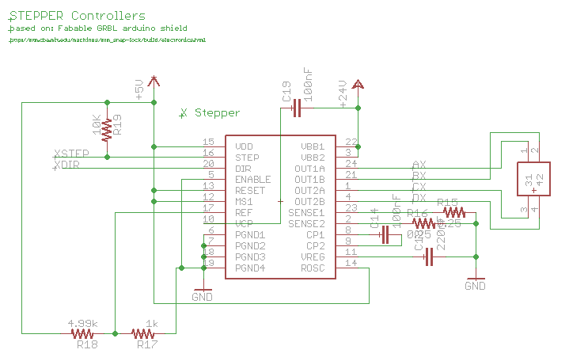
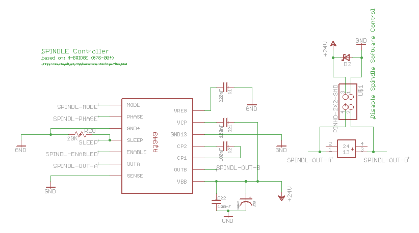
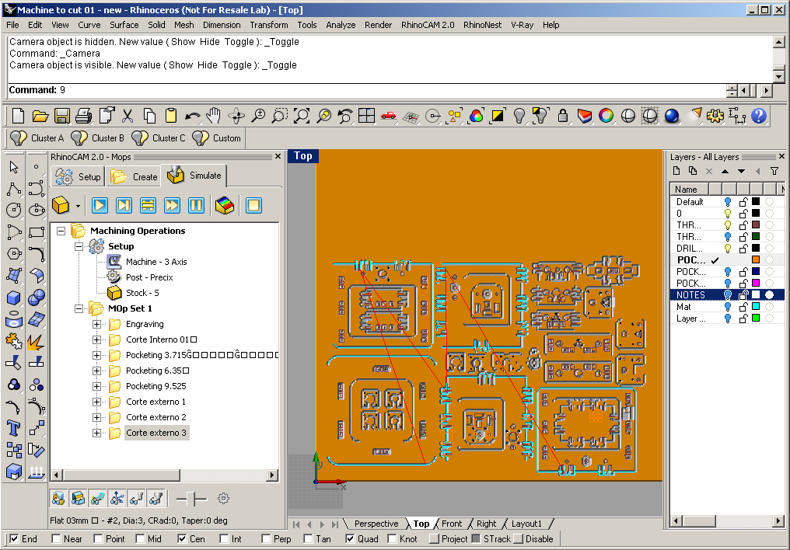
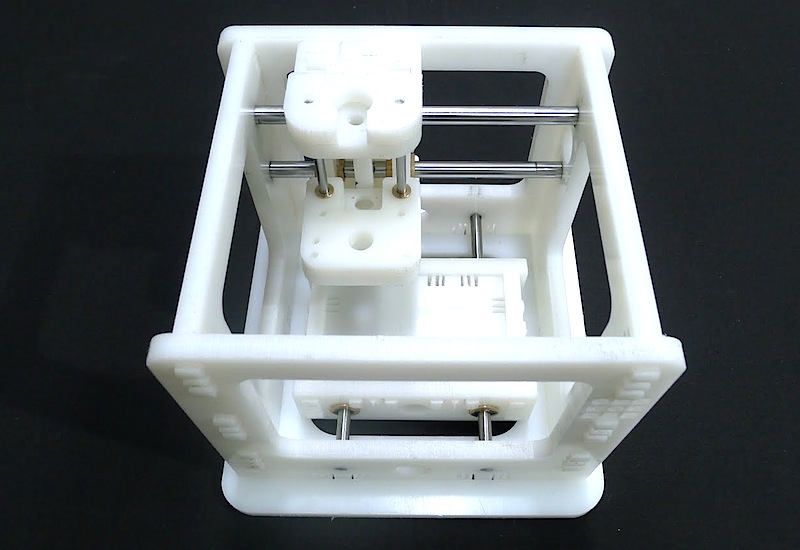

We are building a Snap MTM Fab…
GRBLduino
I'm working on the design of an all-in-one fabable CNC machine controller based on Fabable GRBL arduino shield, the Fabinabox SPINDLE Controller and the Arduino Duemilanove design.Fabable GRBL arduino shield by mit.cba.edu
Fabinabox SPINDLE Controller by mit.cba.edu
Spindle controll is not implemented by GRBL yet but will be avaiable in their new release. Right know there's a jumper so you can bypass the controller. MTM Snap MILLING
Together with Carlos Castro I prepared the CAM of the MTM Snap structure. We used Rhino CAM, you can read more about on the Computer controlled machining assignment.  